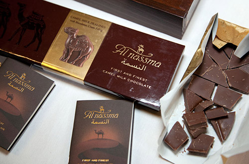
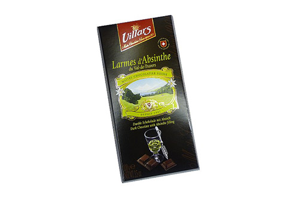
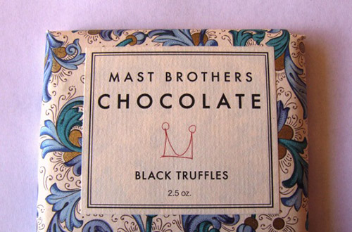
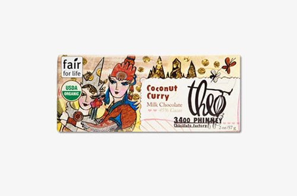
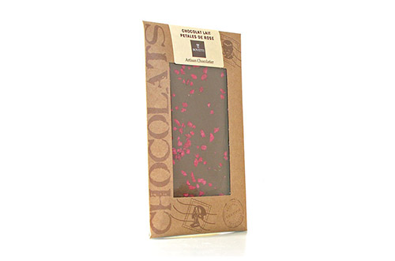
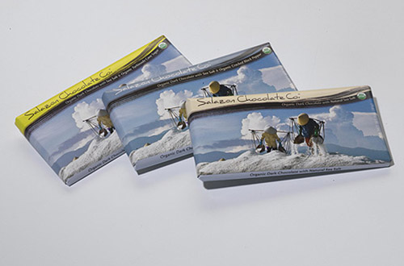
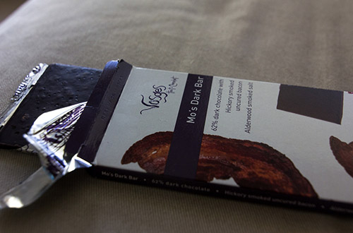
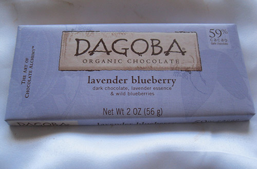
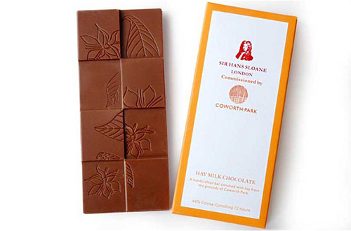
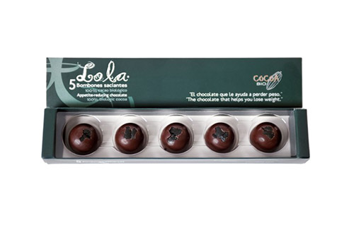

Сегодня любители сладких плиток могут
попробовать лакомство с карри и абсентом, лепестками цветов и солью и
другими удивительными добавками и свойствами
Шоколад является одним из самых популярных
товаров на планете: в 2011 году мировые продажи шоколадных изделий
впервые в истории перешагнули отметку в $100 млрд, а с 1995 года во
многих странах мира 11 июля даже отмечают всемирный день этого
лакомства. В России регулярно употребляют шоколад около 82% граждан, а в
Европе и США этот показатель еще выше. Правда, не так давно
Международный центр тропического сельского хозяйства напугал сладкоежек
новостью о том, что к 2050 году из-за изменения климата шоколад может
стать деликатесом. А пока этого не случилось, производители сладостей
изобретают новые сочетания вкусов и начинок шоколада, причем необычные
плитки от известных производителей продаются по вполне приемлемым ценам.
Forbes отобрал 10 шоколадок с самыми необычными вкусами.
Шоколад из верблюжьего молока
Цена: по запросу
Купить
В ОАЭ верблюжье молоко — популярный продукт: здесь можно полакомиться
мороженым, сделанным на его основе, а с весны 2012 года еще и
попробовать шесть новых вкусов верблюжьего молока, запущенных в продажу
ведущим производителем молочных продуктов компанией Al Ain Dairy. Но все
же наибольший интерес у потребителей вызывает шоколад из верблюжьего
молока. Необычное лакомство выпускает компания Al Nassma, представители
которой утверждают, что такой шоколад полезнее традиционного и благодаря
пониженному содержанию жиров подходит даже диабетикам. В качестве
добавок в шоколаде Al Nassma выступают традиционные восточные сладости:
мед, орехи и специи. Пока приобрести необычную сладость можно лишь
напрямую у производителя, а также в гостиницах и аэропортах страны, но в
компании Al Nassma уже подумывают о выходе на европейский рынок.
Шоколад с абсентом
Цена: 197 рублей
Купить
Шоколад с добавлением алкоголя не редкость: конфеты «Вишня в коньяке»
продавались еще в советских магазинах, а позднее на полках появились и
финские конфеты Fazer с водкой. Но существующей уже более столетия
швейцарской компании Villars, выпустившей на рынок горький шоколад с
абсентом Villars Larmes d’Absinthe, удалось удивить даже искушенных
сладкоежек. Особенно остро вкус шоколада с абсентом проявляется в тот
момент, когда он начинает таять во рту и выпускать горечь полынной
настойки. Опьянеть от необычного лакомства вряд ли удастся, ведь
содержание абсента в шоколаде составляет всего 8,5%. Кстати, шоколадный
дом Villars выпускает еще несколько наименований алкогольного шоколада,
например с айвовой, грушевой и сливовой водкой, а также c коньяком.
Шоколад со вкусом черного трюфеля
Цена: $8
Купить
Черные трюфели — дорогой и редкий продукт, а шоколад с ними является
еще большей редкостью. Причем под трюфелями подразумеваются не известные
конфеты, а ценные съедобные клубни, цена которых составляет свыше $2000
за килограмм. Производство лакомства с необычной начинкой наладили два
брата — Рик и Майкл Маст, которые выпускают шоколад под брендом Mast
Brothers. Их фабрика является одной из немногих в США, где весь шоколад
изготавливают вручную, включая переработку натуральных какао-бобов и
упаковку продукции. Рик и Майкл придумывают необычные вкусы шоколада, и
лакомство с добавлением черного трюфеля Mast Brothers Chocolate
Black Truffle точно подходит под это определение. Помимо 74%
шоколада и дорогостоящего деликатеса в плитку шоколада добавляют щепотку
морской соли. Лакомство обладает присущим трюфелю землистым вкусом,
который раскрывается особым образом, как только шоколад начинает таять
во рту.
Шоколад с кокосом и карри
Цена: $3,25
Купить
Шоколадом с острым перцем сегодня никого не удивить, а вот сладкое
лакомство с добавлением индийской приправы карри пока многим в новинку.
Шоколад с необычным, пряным вкусом выпустила американская компания Theo
Chocolate. По словам ведущего шоколатье марки Беки Довилль, создавая
комбинации из разных вкусов, она не ставит перед собой пределов. Как
результат, марка Theo Chocolate активно собирает престижные награды за
такие вкусовые сочетания, как «Фига, фенхель и миндаль» или «Лаймовый
кориандр». Не стал исключением и молочный шоколад с добавлением
поджаренного кокоса и острого карри. Вкус необычной плитки получился
весьма экзотичным, и его в первую очередь смогут оценить по достоинству
любители индийской кухни. Органический шоколад от фабрики Theo
отличается коротким сроком хранения, но зато производится только из
экологически чистых ингредиентов.
Шоколад с цветочными лепестками
Цена: €4,5
Купить
О существовании шоколада с орехами или изюмом, найти который можно на
полке любого супермаркета, знает каждый ребенок. А вот шоколадные
плитки с добавлением цветочных лепестков пока не столь распространены.
Между тем сладкое лакомство с лепестками розы, жасмина, лаванды и фиалки
французская компания Bovetti выпускает уже несколько лет. Небольшая
фабрика была основана в 1994 году у подножья французских Альп Вальтером
Боветти, который покинул родной Пьемонт, чтобы осуществить свою мечту и
создать новый шоколадный бренд. Сегодня компания выпускает около 150
наименований шоколада, среди которых особое место занимают плитки со
всевозможными добавками. Лепестки цветов становятся ингредиентом
молочного, горького и даже белого шоколада. Они попадают в плитки
Bovetti в засушенном и засахаренном виде. Вкус лепестков едва уловим, но
зато они издают приятный аромат.
Соленый шоколад
Цена: $3,59
Купить
Первое определение, которое приходит в голову при слове «шоколад» —
сладкий. Но, как оказалось, он может быть и соленым. Причем многие
кондитеры называют подобное сочетание вполне естественным, ведь соль
способна подчеркнуть сладкий вкус продукта и даже усилить его. Одной из
марок, выпускающих темный шоколад с солью, является компания Salazon. И
чтобы покупателю было проще найти плитку с необычной добавкой,
американский производитель прямо на упаковке и даже на самой шоколадке
изобразил нескольких рабочих, добывающих соль. Органический шоколад
Salazon Salted Chocolate Bars производят небольшими партиями, а входящую
в его состав морскую соль привозят с месторождений в Южной Америке.
Помимо разновидности с одной солью, марка предлагает плитки со вкусом
соли и перца, соли и тростникового сахара, а также соли и молотого кофе.
Шоколад с беконом
Цена: $7,5
Купить
Наполеон любил свинину под шоколадом, а украинцы до сих пор не прочь
полакомиться салом в шоколаде — такой пункт есть в меню многих
популярных ресторанов и пользуется неизменным спросом. Возможно, эти
факты и подтолкнули чикагскую компанию Vosges Haut-Chocolate к идее
совместить в одном два любимых американцами продукта — бекон и шоколад —
в плитке Mo’s Bacon Bar. Плитки молочного и горького шоколада содержат
кусочки копченого бекона, а также крупицы соли. Решившему отведать
продукт придется задействовать все пять органов чувств — так, по крайней
мере, гласит надпись на упаковке. Стоит отметить, что шоколад с беконом
— не первый экзотический товар американской марки. Vosges также
предлагает плитки со вкусом грибов и арахисового масла, мексиканского
анчо и японского васаби. Говорят, что палитра необычных вкусов шоколада
навеяна впечатлениями от путешествий, полученными владелицей компании
Катриной Марков.
Лавандовый шоколад
Цена: 3,45$
Купить
Лаванда издавна славится как целебная трава с успокаивающими
свойствами. Возможно, именно поэтому на нее пал выбор американских
шоколатье, решивших изготовить шоколад, эффект от которого был бы равен
нескольким часам, проведенным в спа-салоне. Так появился горький темный
шоколад Dagoba lavender blueberry. Помимо лаванды, которая придает
плитке приятный аромат, в ее состав входит черника, обладающая
антиоксидантными свойствами. Начать выпуск органического шоколада
Dagoba, название которого с санскрита переводится как «храм богов», в
2001 году решил бывший шеф-повар Фредерик Шиллинг. Для производства
плиток он отбирал экологически чистые какао-бобы, собранные вручную в
Эквадоре, Коста-Рике и на Мадагаскаре. Помимо лаванды и черники, в
шоколад Dagoba добавляют также малину, цедру лимона, розмарин, кардамон и
даже клевер.
Шоколад с ароматом сена
Цена: по запросу
Официальный сайт шоколатье
Вслед за засушенными лепестками цветов и редкими приправами в шоколад
начали добавлять и луговые травы. Специально для виндзорской
пятизвездочной гостиницы Coworth Park известный английский шоколатье сэр
Ханс Слоун придумал и изготовил особый сорт шоколада из несовместимых
на первый взгляд ингредиентов — какао-бобов и сена. Эксклюзивные плитки
появляются на свет в результате смешивания шоколадной массы со
специально высушенной и измельченной травой, скошенной на лугах по
соседству с отелем. Помимо запаха сена, в шоколаде Hay
milk chocolate также уловимы ноты жасмина, розы и шафрана —
все это, по задумке автора, должно олицетворять пасторальную тишину
окрестностей гостиницы. Правда, возможность оценить это есть далеко не у
всех: о широкой продаже необычного шоколада речь пока не идет, и
попробовать его можно, либо став гостем отеля Coworth Park, либо
приобретя шоколад в магазине при гостинице.
Шоколад для похудения
Цена: от €8
Купить
Есть сладкое и худеть стало возможно благодаря изобретению испанских
кондитеров, придумавших и запустивших в продажу необычный шоколад,
который позволяет не набирать лишний вес, а, наоборот, избавляться от
него. Продукт от компании Cocoa Bio, впервые представленный в 2009 году
на шоколадной выставке в Мадриде, получил название Lola, а также ряд
нехарактерных для сладостей ингредиентов. Так, в его состав вошли особые
аминокислоты, подавляющие аппетит. На вкус шоколад для похудения,
который выпускается в виде конфет, ничем не отличается от традиционного,
а вот цвет у него необычный. Конфеты имеют зеленоватый оттенок, который
им придают сходящие в состав продукта водоросли, богатые витаминами А и
В12. Шоколад Lola отличается от обычного еще и тем, что его рекомендуют
есть не после, а до еды, после чего желание съесть первое, второе и
десерт должно, по идее, пропасть.